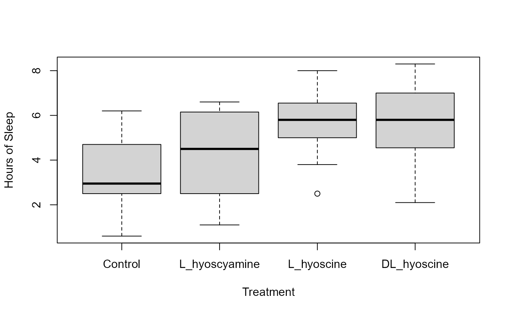
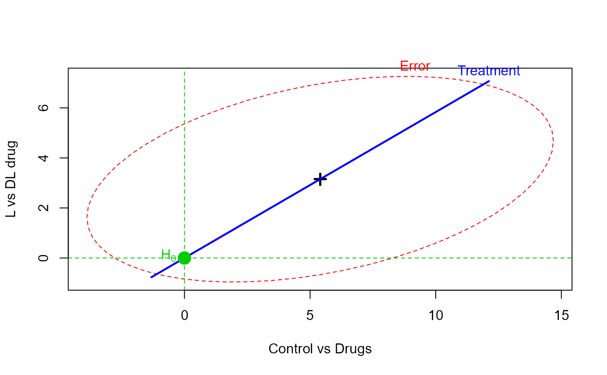
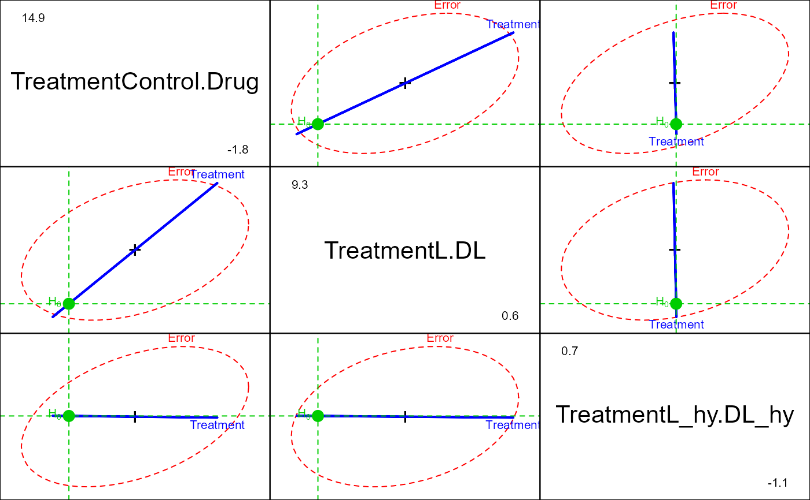

Cushny-Peebles Data: Soporific Effects of Scopolamine Derivatives
CushnyPeebles.RdCushny and Peebles (1905) studied the effects of hydrobromides
related to scopolamine and atropine
in producing sleep. The sleep of mental patients was
measured without hypnotic (Control) and after treatment
with one of three drugs: L. hyoscyamine hydrobromide (L_hyoscyamine),
L. hyoscine hydrobromide (L_hyoscyine), and
a mixture (racemic) form, DL_hyoscine, called atropine.
The L (levo) and D (detro)
form of a given molecule are optical isomers (mirror images).
The drugs were given on alternate evenings, and the hours of sleep were compared with the intervening control night. Each of the drugs was tested in this manner a varying number of times in each subject. The average number of hours of sleep for each treatment is the response.
Student (1908) used these data to illustrate the paired-sample t-test in small samples, testing the hypothesis that the mean difference between a given drug and the control condition was zero. This data set became well known when used by Fisher (1925). Both Student and Fisher had problems labeling the drugs correctly (see Senn & Richardson (1994)), and consequently came to wrong conclusions.
But as well, the sample sizes (number of nights) for each mean differed widely,
ranging from 3-9, and this was not taken into account in their analyses.
To allow weighted analyses, the number of observations for each mean
is contained in the data frame CushnyPeeblesN.
Format
CushnyPeebles: A data frame with 11 observations on the following 4 variables.
Controla numeric vector: mean hours of sleep
L_hyoscyaminea numeric vector: mean hours of sleep
L_hyoscinea numeric vector: mean hours of sleep
D_hyoscinea numeric vector: mean hours of sleep
CushnyPeeblesN: A data frame with 11 observations on the following 4 variables.
Controla numeric vector: number of observations
L_hyoscyaminea numeric vector: number of observations
L_hyoscinea numeric vector: number of observations
DL_hyoscinea numeric vector: number of observations
Details
The last patient (11) has no Control observations, and so is often excluded
in analyses or other versions of this data set.
Source
Cushny, A. R., and Peebles, A. R. (1905), "The Action of Optical Isomers. II: Hyoscines," Journal of Physiology, 32, 501-510.
References
Fisher, R. A. (1925), Statistical Methods for Research Workers, Edinburgh and London: Oliver & Boyd.
Student (1908), "The Probable Error of a Mean," Biometrika, 6, 1-25.
Senn, S.J. and Richardson, W. (1994), "The first t-test", Statistics in Medicine, 13, 785-803.
See also
sleep for an alternative form of this data set.
Examples
data(CushnyPeebles)
# quick looks at the data
plot(CushnyPeebles)
boxplot(CushnyPeebles, ylab="Hours of Sleep", xlab="Treatment")

##########################
# Repeated measures MANOVA
CPmod <- lm(cbind(Control, L_hyoscyamine, L_hyoscine, DL_hyoscine) ~ 1, data=CushnyPeebles)
# Assign within-S factor and contrasts
Treatment <- factor(colnames(CushnyPeebles), levels=colnames(CushnyPeebles))
contrasts(Treatment) <- matrix(
c(-3, 1, 1, 1,
0,-2, 1, 1,
0, 0,-1, 1), ncol=3)
colnames(contrasts(Treatment)) <- c("Control.Drug", "L.DL", "L_hy.DL_hy")
Treats <- data.frame(Treatment)
if (require(car)) {
(CPaov <- Anova(CPmod, idata=Treats, idesign= ~Treatment))
}
#> Note: model has only an intercept; equivalent type-III tests substituted.
#>
#> Type III Repeated Measures MANOVA Tests: Pillai test statistic
#> Df test stat approx F num Df den Df Pr(>F)
#> (Intercept) 1 0.90437 85.113 1 9 6.969e-06 ***
#> Treatment 1 0.70354 5.537 3 7 0.02896 *
#> ---
#> Signif. codes: 0 '***' 0.001 '**' 0.01 '*' 0.05 '.' 0.1 ' ' 1
summary(CPaov, univariate=FALSE)
#>
#> Type III Repeated Measures MANOVA Tests:
#>
#> ------------------------------------------
#>
#> Term: (Intercept)
#>
#> Response transformation matrix:
#> (Intercept)
#> Control 1
#> L_hyoscyamine 1
#> L_hyoscine 1
#> DL_hyoscine 1
#>
#> Sum of squares and products for the hypothesis:
#> (Intercept)
#> (Intercept) 3385.6
#>
#> Multivariate Tests: (Intercept)
#> Df test stat approx F num Df den Df Pr(>F)
#> Pillai 1 0.904370 85.11285 1 9 6.9692e-06 ***
#> Wilks 1 0.095630 85.11285 1 9 6.9692e-06 ***
#> Hotelling-Lawley 1 9.456983 85.11285 1 9 6.9692e-06 ***
#> Roy 1 9.456983 85.11285 1 9 6.9692e-06 ***
#> ---
#> Signif. codes: 0 '***' 0.001 '**' 0.01 '*' 0.05 '.' 0.1 ' ' 1
#>
#> ------------------------------------------
#>
#> Term: Treatment
#>
#> Response transformation matrix:
#> TreatmentControl.Drug TreatmentL.DL TreatmentL_hy.DL_hy
#> Control -3 0 0
#> L_hyoscyamine 1 -2 0
#> L_hyoscine 1 1 -1
#> DL_hyoscine 1 1 1
#>
#> Sum of squares and products for the hypothesis:
#> TreatmentControl.Drug TreatmentL.DL TreatmentL_hy.DL_hy
#> TreatmentControl.Drug 291.60 170.100 -0.540
#> TreatmentL.DL 170.10 99.225 -0.315
#> TreatmentL_hy.DL_hy -0.54 -0.315 0.001
#>
#> Multivariate Tests: Treatment
#> Df test stat approx F num Df den Df Pr(>F)
#> Pillai 1 0.7035419 5.53737 3 7 0.028955 *
#> Wilks 1 0.2964581 5.53737 3 7 0.028955 *
#> Hotelling-Lawley 1 2.3731584 5.53737 3 7 0.028955 *
#> Roy 1 2.3731584 5.53737 3 7 0.028955 *
#> ---
#> Signif. codes: 0 '***' 0.001 '**' 0.01 '*' 0.05 '.' 0.1 ' ' 1
if (require(heplots)) {
heplot(CPmod, idata=Treats, idesign= ~Treatment, iterm="Treatment",
xlab="Control vs Drugs", ylab="L vs DL drug")
pairs(CPmod, idata=Treats, idesign= ~Treatment, iterm="Treatment")
}
#> Loading required package: heplots
#> Loading required package: broom
#> Warning: package 'broom' was built under R version 4.4.3
#> Note: model has only an intercept; equivalent type-III tests substituted.

#> Note: model has only an intercept; equivalent type-III tests substituted.

################################
# reshape to long format, add Ns
CPlong <- stack(CushnyPeebles)[,2:1]
colnames(CPlong) <- c("treatment", "sleep")
CPN <- stack(CushnyPeeblesN)
CPlong <- data.frame(patient=rep(1:11,4), CPlong, n=CPN$values)
str(CPlong)
#> 'data.frame': 44 obs. of 4 variables:
#> $ patient : int 1 2 3 4 5 6 7 8 9 10 ...
#> $ treatment: Factor w/ 4 levels "Control","L_hyoscyamine",..: 1 1 1 1 1 1 1 1 1 1 ...
#> $ sleep : num 0.6 3 4.7 5.5 6.2 3.2 2.5 2.8 1.1 2.9 ...
#> $ n : int 9 9 8 9 9 8 8 7 8 9 ...